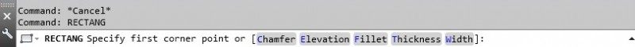
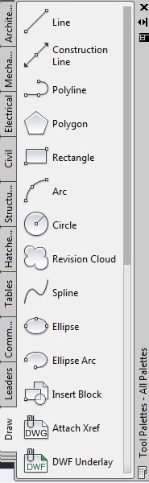
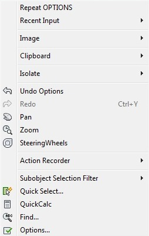
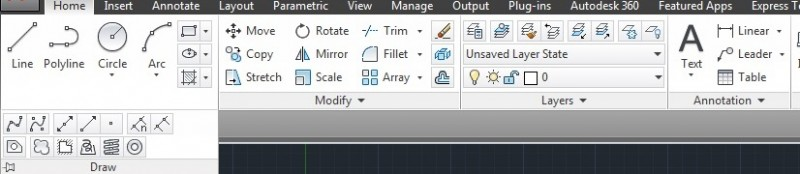
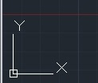

Лекция 2: Ввод команд. Методы ввода координат
В предыдущем уроки были рассмотрены основные элементы интерфейса системы AutoCAD. В данном уроке будет более детально рассмотрены система координат, методы введения команд и координат.
Ввод команд
Процесс создания чертежей в системе AutoCAD происходит в режиме диалога языком команд. Команда выполняется только после ввода всей необходимой для ее исполнения информации. Для уточнения действия команды предусмотрен ввод параметров. Ввод команд осуществляется несколькими способами:
1.Ввод команды с клавиатуры.
2.Выбор команды в меню.
3.Использование кнопок на панели инструментов.
Ввод команд с клавиатуры
Ввод команды с клавиатуры осуществляется в командной строке после запроса системы, имеющего вид:
Command:
А так же в последних версиях AutoCAD пользователь имеет возможность свободного ввода, при этом нет необходимости перехода в командную строку, достаточно просто начать вводить команду.
Необходимо ввести полное, или сокращенное имя команды – псевдоним. Найти имена и псевдонимы команд можно в файле acad.PGP, который находится в папке support, которая в свою очередь в папке с установленной программой. Имена и псевдонимы вводятся без учета регистра. Исполнение команды после ее ввода происходит по нажатию клавиши ENTER или SPACE, или по нажатию ПКМ.
Для уточнения роботы ряда команд необходимо также сделать выбор параметра из тех, что предлагаются системой. Для ряда команд выбор параметров проводится в диалоговом окне или в командной строке. Если для такой команды ввести дефис перед именем (-ARRAY, -BLOCK), то диалоговое окно выводиться не будет, а процесс выбора параметров будет проводиться в командной строке, где AutoCAD выводит подсказку про необходимые параметры.
После обработки команды ее результат отображается на экране.
Ввод команд из меню
AutoCAD предоставляет для ввода команд несколько видов меню – системное меню, экранное меню, контекстное меню.
Системное меню находится под рядом заголовка и является иерархической структурой из меню, которые разворачиваются. Для того что бы ввести команду, необходимо выбрать пункт меню. При чем для выполнения одной и той же команды может быть предоставлено несколько альтернативных вариантов.
Экранное меню по умолчанию не отображается на экране. Для его отображения необходимо вызвать команду Service>Options; перейти на вкладку Display и в поле Window Elements выбрать ключ Show window menu.
Экранное меню повторяет пункты системного меню, но имеет другую организацию. После выбора пункта экранного меню список его пунктов замещает пункты меню, то есть появляется на том же месте. При выборе команды экранного меню она автоматически отображается в командной строке.
Контекстное меню командного режима появляется при нажатии ПКМ в том месте, где находится курсор. Это меню включает в себя параметры активной в данный момент команды.
Ввод команд при помощи панели инструментов.
Панель инструментов предоставляет наглядный способ введения команд при помощи кнопок с графическим отображением команд.
Методы ввода координат
Положение любой точки чертежа может быть задано в пространстве модели декартовыми прямоугольными координатами или полярными координатами.
Значение координат точки связывается с системой координат. В системе AutoCAD вводится понятие мировой системы координат WCS – World Coordinate System. Для данной системы координат ось Х размещена горизонтально, ее положительное направление – слева направо, ось Y размещена вертикально, ее положительное направление – снизу вверх, а ось Z направлена перпендикулярна плоскости экрана в строну пользователя.
Пиктограмма WCS размещается в левом нижнем углу.
В декартовой системе координат положение точки на плоскости XY определяется значением двух координат X и Y, которые определяют расстояние, на котором находится точка от начала координат вдоль соответствующих осей. При записи координаты отделяются запятой – X,Y.
В полярной системе координат положение точки на плоскости определяется двумя величинами – полярным радиусом – R, который определяется как расстояние от точки до начала координат, и значением угла – U, который измеряется в градусах против часовой стрелки (R U).
Различаются абсолютные координаты точки и относительные.
Ввести координаты можно несколькими способами:
Интерактивный метод состоит в вводе значения координат при помощи указателя. При перемещении указателя изменяются его координаты. Эти координаты можно использовать при осуществлении команд построения объектов. Ввод координат происходит в момент нажатия ЛКМ.
Ввод значения координат с клавиатура в командной строке.
Ввод значения координат с использованием объектной привязки. Наиболее быстрый способ указания координат точки – привязка к характерным точкам ранее созданных объектов. В этом случае значение координат не требует вычисления.
Динамический ввод позволяет вводить координаты начальной точки объекта после выбора команды построения объекта. В данном случае после запуска команды достаточно набрать на клавиатуре нужные координаты, разделив их запятой.
На этом урок посвященный изучению системы координат и методов ввода команд и координат закончен. Следующий урок будет посвященном детальному изучению использования режимов, объектной привязки, объектного отслеживания и сетки.